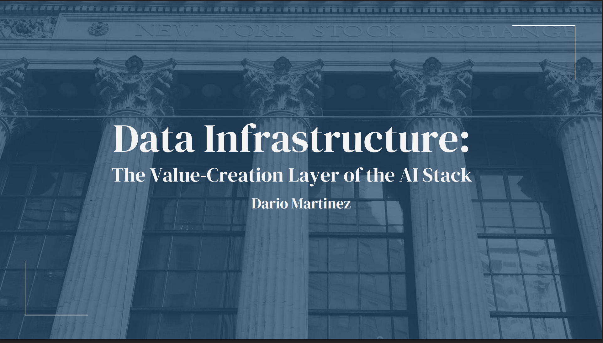

Data Infrastructure Deck
This project began with a question that emerged from working with SaaS and vertical software companies: what sits between application software and the digital infrastructure powering it?
Daily data center and capex news pointed me toward the missing layer. After reading primers, analyzing companies across Bloomberg and Yahoo Finance, that curiosity turned into a structured sector deep dive.
The result is this data infrastructure deck which is an attempt to define the layer that makes modern software scalable, reliable, and increasingly indispensable in the AI era.
View the Deck